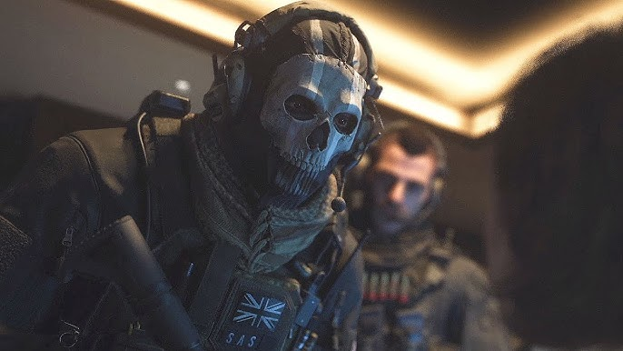
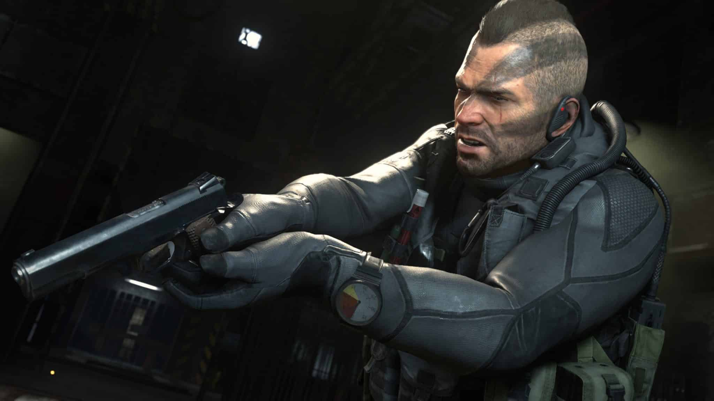
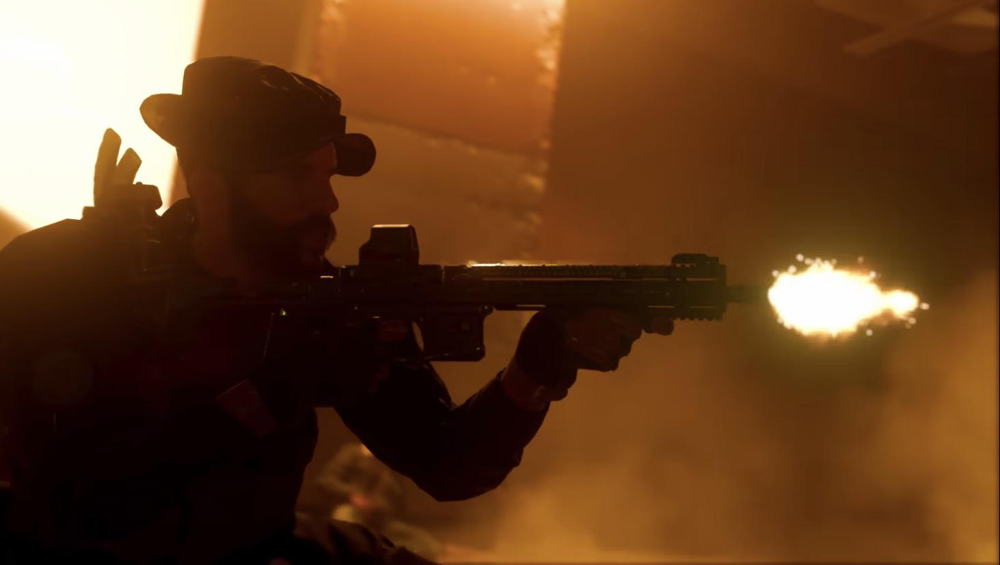
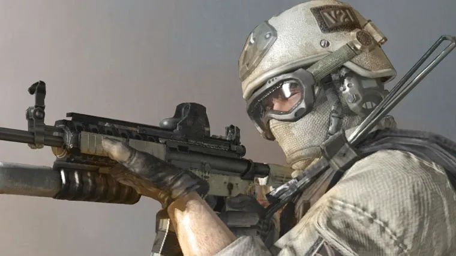

A member of Task Force 141 and a British special forces operator. Ghost usually known for his calm and collected demeanor, as well as his fierce loyalty and dedication to his comrades.
Tech Savvy
Expert marksman
Close-quarters combat
Stealth and Inflitration
John "Soap" MacTafish
Sergeant and Special Forces soldier, served as the 22nd in the S.A.S. He is known for his strong leadership, bravery, and loyalty to his comrades.
Armed with an AK-47M.
Combat Expertise.
Tactical Leadership.
Demolition and Explosives Expert.
John "Price"
An elite sneak-and-strike expert known for his sniper and sabotage skills. He is also a highly experienced and respected officer in the British SAS.
Armed with an M4A1
Tactical genuis
Saboteur
Stealth
Gary "Roach" Sanderson
Part of Task Force 141 and a special forces operator. Roach is also typically seen in standard military combat gear, including body armor, gloves, and a helmet.
Marksmanship
Explosive expertise
Loyal
Tactical infiltration
Warren "Frost"
A Delta Force operative assigned by Sandman and Frost also joins forces with Task Force 141 during key operations. He is usually seen wearing tactical military gear, similar to other Delta Force operators.